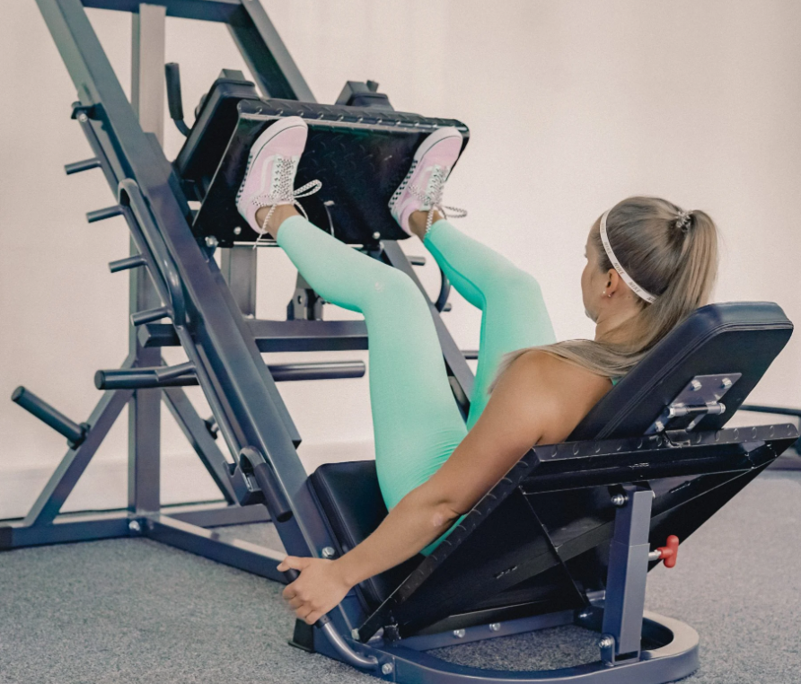
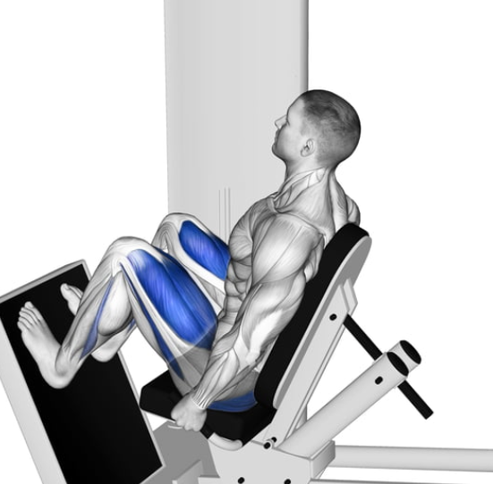
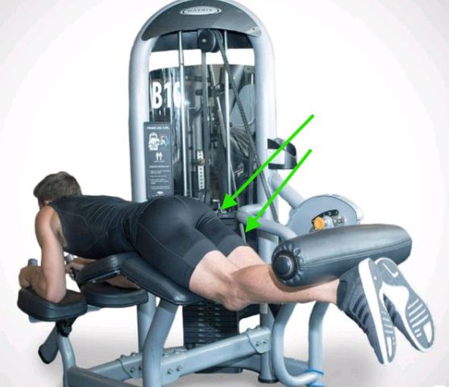
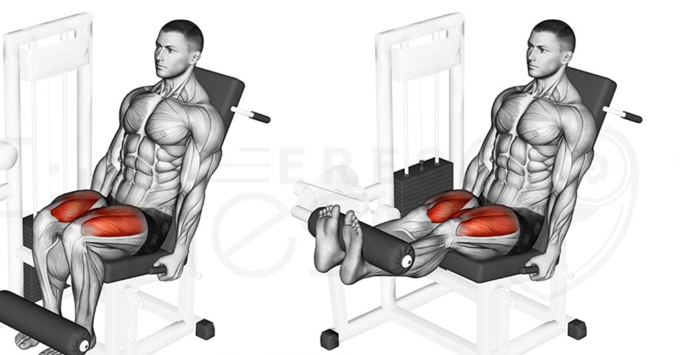
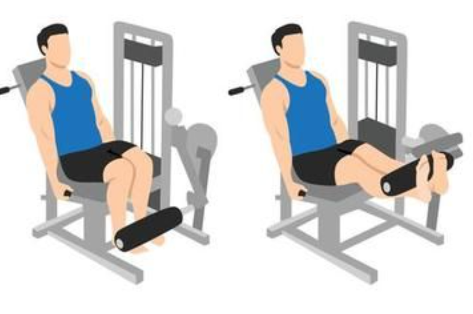
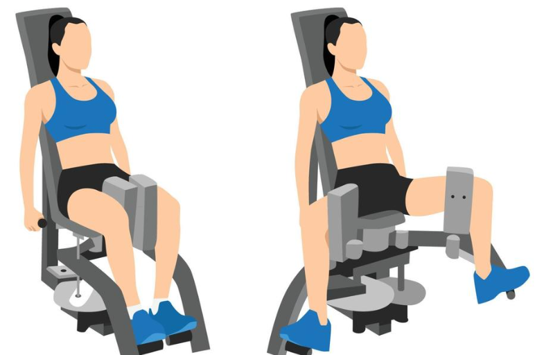
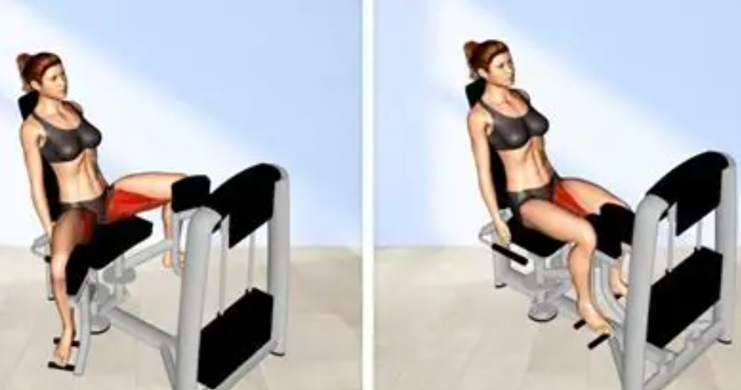
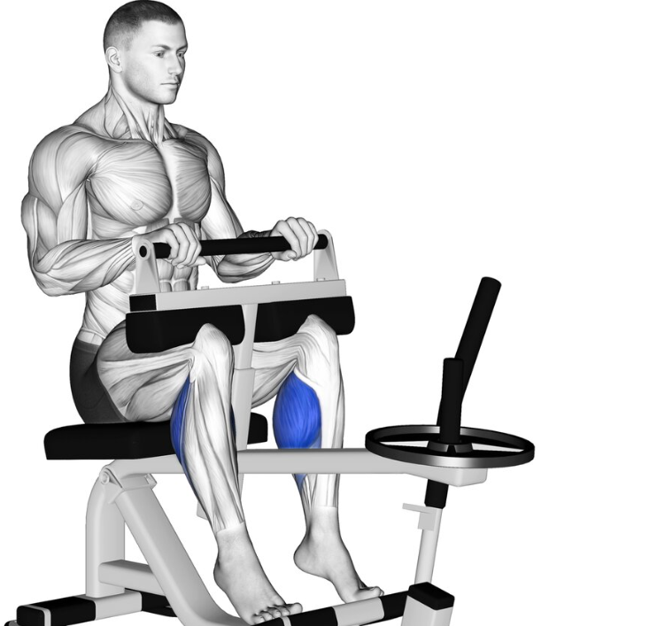
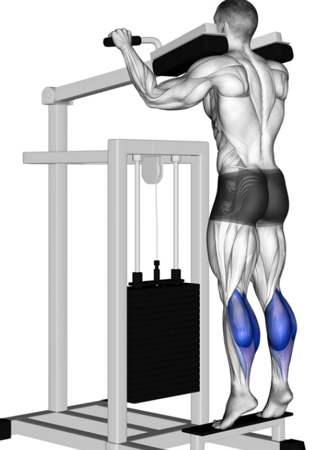

🌱 Calentamiento de pierna


Prepara las piernas con movimientos suaves de tobillos, rodillas y caderas. Puedes hacer círculos de tobillo, flexiones suaves de rodilla y movimientos de apertura de cadera. No fuerces el rango ni hagas movimientos dolorosos. Después, haz 2 series del siguiente ejercicio con poco o ningún peso para practicar y entrar en calor.
🎥 Ver calentamiento🏋️ Prensa inclinada


Ajusta el asiento para que la espalda y la cadera queden apoyadas. Coloca los pies en la plataforma, algo más bajos si te resulta cómodo, sin despegar los talones. Baja lentamente y sube empujando la plataforma. No bloquees las rodillas ni despegues la cadera; utiliza un recorrido que puedas controlar.
🎥 Ver prensa inclinada 🎥 Ver otra demostración🦵 Curl femoral en máquina

Ajusta la máquina para que el apoyo quede cómodo sobre la parte baja de las piernas. Según el tipo de máquina, siéntate o recuéstate y flexiona las rodillas para acercar los talones hacia ti. No levantes la cadera ni te impulses. Regresa lentamente y elige un peso que puedas controlar.
🎥 Ver curl femoral 🎥 Ver otra demostración🦵 Extensión de cuádriceps


Ajusta el rodillo para que quede sobre la parte baja de las piernas, cerca de los tobillos. Mantén la espalda apoyada y extiende las rodillas para levantarlo. Haz una pausa breve y baja lentamente. Evita impulsarte o despegar la cadera; no fuerces la extensión si sientes molestias.
🎥 Ver extensión de cuádriceps 🎥 Ver otra demostración🦵 Abducción de cadera en máquina


Siéntate con la espalda apoyada y abre las piernas lentamente, sin impulsarte ni mover el tronco. Haz una pausa breve al final del recorrido y regresa con control, evitando que las placas golpeen. Mantén una postura estable y usa un peso que puedas manejar con buena técnica.
🎥 Ver máquina de abductores 🎥 Ver otra demostración🦶 Elevación de gemelos


Apoya la parte delantera de los pies en la plataforma y deja los talones libres. Eleva los talones como si te pusieras de puntillas y bájalos lentamente hasta sentir un estiramiento cómodo. Evita rebotar y completa la subida y la bajada con control.
🎥 Ver elevación de gemelos 🎥 Ver otra demostración🏆 ¡Terminaste!
¡Gran trabajo! La constancia te lleva más lejos.